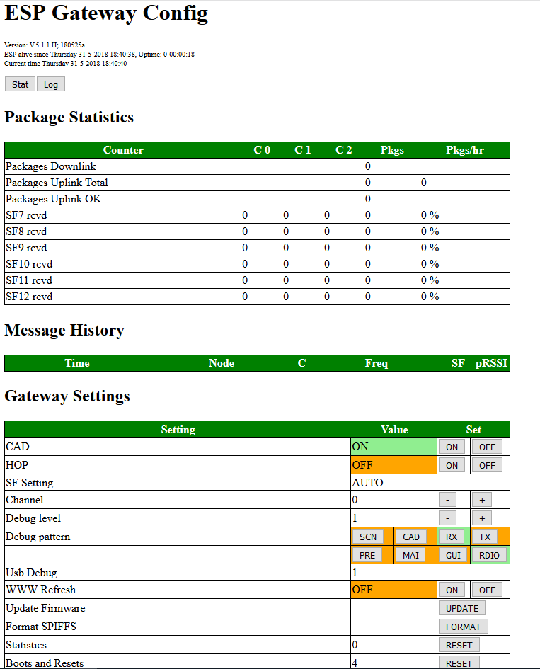
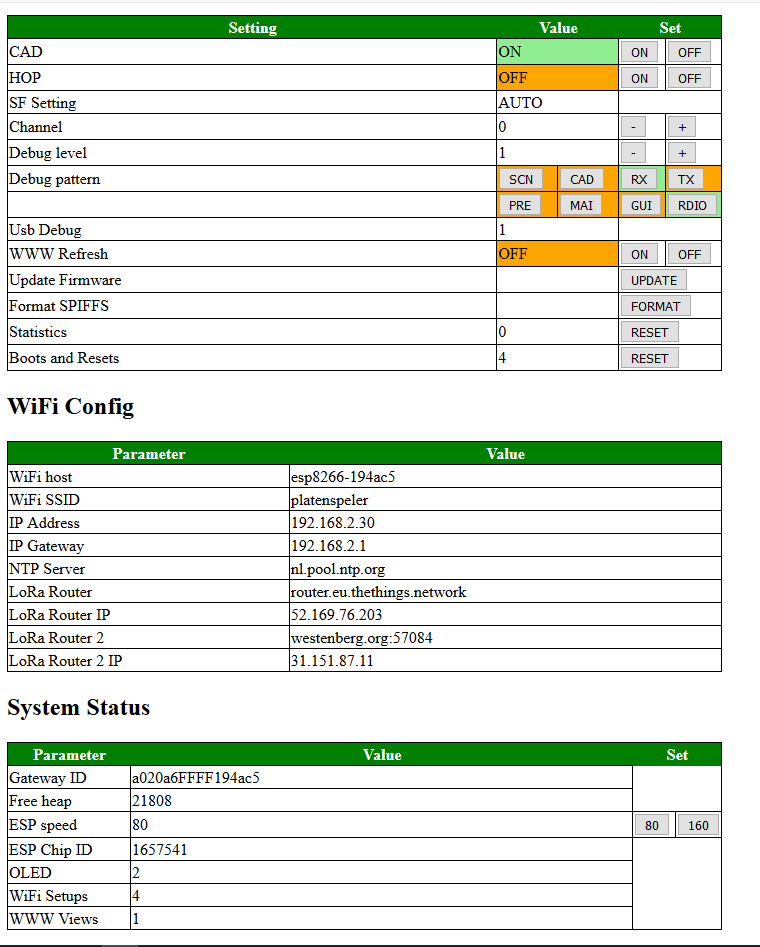

This is the 6th generation of software implementing LoRa gateway function on a platform consisting of an ESP8266 mcu and a SX1276 radio. Unlike the previous versions of the gateway, this version will listen for all available Spreading Factors on a single frequency. Also for well know nodes it will show the name instead of its DevAddr and if condfigured it will also decode messages coming from these well-known sensor nodes.
This section describes the first important decisions you have to take with your Gateway and how to configure the gateway to get you going. By no means this chapter is meant to be exchaustive, detailed or complete, it merely gives a hint how to start and go from here. The reader is advised to read the rest of this chapter and finish the configuration after reading it.
All other parameters in the ESP-sc-gway.h file can be left to their default values initially. Please connect to the USB port and look at the console. It will show at what IP address the sensor node connects. You can then open that IP address in your browser and manage the gateway through the webbrowser.
In order to avoid having to use both options, we try to make most settings availble on both interfaces. But in practise the .h file is used to make configuration changes that are more permanent and the user interface is used to set everyday parameters and things that change more often.
There are two major ways to set the configuration of the Gateway:
Most parameters that can be set are compile-time directives so that code is compiled or not based on the value of the directive in the ESP-sc-gateway.h file. This way, the code base can be kept small when functions are not used. Example: Support for Wifi Manager can be turned ON or OFF based on the setting of WIFIMANAGER in the ESP-sc-gway.h file.
#define WIFIMANAGER 0
By changing the definition to "1" the complete functionality to use Wifi Manager is included in the code and compiled. By using "0" all functions relating to this functionality is excluded from the gateway code.
Several parameters or #define compiler directives can be set in the ESP-sc-gway.h file such as:
The value of DEBUG determines whether some parts of code get compiled or not. Also this is the initial value of the debug parameter. As the value can be changed using the admin webserver, leave it to the value set to 1, but for fFor operational use, better set initial DEBUG vaulue 0.
Note: You can still set a higher value for the debug variable in the Webserver GUI (As long as DUSB is set to 1).
DUSB sets the debugging/Output for the SerialUSB port. If DUSB is set to 0, minimal (almost 0) output should be sent to the Serial Port. I like to switch off ANY communictation to the USB port if DUSB is set to 0 (ans will probably).
If DUSB is set to 1, it will allow any USB communciation which is permitted by the debug level set in the Webserver GUI.
If this variable is set, the SPIFFS firlesystem of the ESP chip is formatted before use. This way the user can force (!) the filesystem to be reset before operation and clean corrupt files of empty the memory (if it is full).
This parameter sets the initial value for the Spreading Factor (SF) which i used in STD mode of operation, If _CAD is enabled the value of _SPREADING is not of use anymore. Valid choiced are SF7 - SF12.
Set the paramet Channel Activity Detection and the corresponding mode of operation of the Single Channel Gateway. In CAD mode the gateway is set to one frequency (mostly 0) and listens to all Spreading Factor messages of coming in on that frequency.
The default value fr this parameter is 1 (ON) and you are advised to keep CAD on since it does ot seem to be missing messages.
Specify whether or not to use the Webserver for this Single Channel Gateway. Although it is possible to switch the Webserver off, for example for security reasons, I recommend to use it as it provides good information on the Gateway operation and the setting of all parameters.
This parameter determines whether the Webserver should refresh every XX seconds. At this moment the Webserver will refresh every 60 seconds by default (It is possible to set other values). It may be possibel that you miss some LoRa packages as the Webserver takes some time and compute power, but for debugging a Single Channel Gateway it is a nice feature to have.
Leave at 80 (The standard Webserver port).
This should be the maximum size of a message going up. Standard value is 192 and should not be changed.
Over the air download of new gateway code is enabled by default. The download itself is not protected by passwords or so, but the SSID of the WiFi server is of-course so we expect that people that have access to the WiFi environment will also be able to download new software versions to the gateway.
This defines the pin-out for the gateway device we use. At this moment there are a few standard gateway boards defined:
Specify whether you want the gateway to gather statics information. There are three values possible:
The STRICT 1-CHANNEL configuration parameter determines the behaviour of the gateway during downstream messaging. The downstream messaging protocol is descripbed in the docuentation, but where necessary important parts are discussed here as well.
For CLASS A devices the downstream messages are sent by the gateway upon receiving a message from a mote. For regular messages, two timeslots are available for sending downstream messages, and for JOIN messages another two are defined.
Note, that the timslots start after the last byte has been received from the mote, so the mote must determine and send its tmst values as late as possible.
AP_NAME
AP_PASSWD
REPEATER
MUTEX
OLED
GATEWAYMGT
STAT_LOG
CONFIGFILE
MAX_STAT 20; Sets the number of lines in the web interface and records that are kept in memory of the last messages sucessfully received.WIFIMANAGER 0; Set to OFF by default. If you like to use WiFi manager, please set it to 1AP_NAME "<Name your gateway accesspoint>";AP_PASSWD "<Your AccessPoint password>";GATEWAYMGT 1;CFG_sx1276_radio; Let this one be defined in this version. The code will support sx1272 with probably minor modifications as well, but this has not been tested. CONFIGFILE "/gwayConfig.txt"; This parameter tells us the name of the SPIFFS file used to store the configuration data._LOCUDPPORT 1700_PULL_INTERVAL 30_STAT_INTERVAL 60_NTP_INTERVAL 3600_TTNPORT 1700_TTNSERVER "router.eu.thethings.network" _THINGPORT <Your Port>; Second backend server to send messages to. Leave undefined (comment #define out) if not used_THINGSERVER "<Your Backend DNS name>"; Second backend server to send messages to. Leave undefined (comment #define out) if not usedGATEWAYNODE 0; #if GATEWAYNODE==1
#define _DEVADDR { 0x26, 0x01, 0x15, 0x3D }
#define _APPSKEY { 0x00, 0x00, 0x00, 0x00, 0x00, 0x00, 0x00, 0x00, 0x00, 0x00, 0x00, 0x00, 0x00, 0x00, 0x00, 0x00 }
#define _NWKSKEY { 0x00, 0x00, 0x00, 0x00, 0x00, 0x00, 0x00, 0x00, 0x00, 0x00, 0x00, 0x00, 0x00, 0x00, 0x00, 0x00 }
#define _SENSOR_INTERVAL 300
#endif_DESCRIPTION "ESP Gateway"_EMAIL "<Your Email>"_PLATFORM "ESP8266"_LAT <Your LAT>_LON <Your LON>_ALT <Your ALT>A_SERVER 1; Enable the webserver. Do not touch unless you know what you are doingA_REFRESH <seconds> //seconds between webpage refresh. 0 stops automatic refreshA_SERVERPORT 80A_MAXBUFSIZE 192_BAUDRATEThe value of BAUDRATE 115200 // Do not touch
Do not touch this valyue, it seems to be a working value.
Most parameters starting with a "_" are parameters only. Please only change these if you know what you are doing. If the parameter contains a "<xxx>" it means that you have to put your own values there. After all, it does not make sense to put my email address or GPS data in your configuration.
The remaning part of the #define settings should be to include or not include certain parts of the code based on your own preference.
This part describes the GUI and how to set parameters. And of course my advise what parameters to set :-).
First of all: Determine the IP address of your single channel gateway. It can be that you set a fixed address in your router, but it could also be tat the router hands out addresses based on its own preference. Should you not know what addres is assigned by the router, remember that the single channel gateway will output the IP address and other important settings over USB during boot-up. So looking at the output on USB is a simple way to get the IP address (and it may be the only way for you).
When starting your GUI this is the first screen you will see.

and the bottom half of the screen.

So let's explain the GUI in more detail. The GUI has a few sections:
The title part contains a little information about the Gateway such as the time it was activated and how long the gateway is active at the moment. It also contains the version of the software.
A few important buttons that activate pop-up screens showing other information that is not present on the main GUI screen. The LOG button for example opens a popup with a text editor containing all messages received by the gateway (.csv style). When a message isreceived the system will log its details in the SPIFFS filesystem. Because of the memory limitation of the ESP module, the last 100 files are saved on the chip and previous ones are deleted as soon as memory runs out. Still, it allows te used to anayse messages longs after these have been received by the gateway.
This section contains the statistical info of all the messages that have been received by the gateway. It displays per spreading factor and per channel how many messages were received and display the amount of messages processed per hour.
This section shows the last 20 messages received by the gateway. Of every message we record the time that it was received, the sensor ID, the channel and the spreading factor used for sending the message etc. As of version 5.3.2 of the gateway another column can be added to this section: The data sent by sensors. When enabled in the ESP-sc-gway.h file with
#define _LOCALSERVER 1
It is possible to add NwkSKey and AppSKey in the loraSensor.h file and enable for some well known nodes the decoding of their data. With this, the sensors do the same thing as the TTN backend, but enable this ith the local GUI Webserver or through the local USB interface. Just enable GUI on the webserver to send output to the USB port.
| Parameter | Allowed Values | Default Value | Description |
| CAD | Yes or No | Yes | Set the Channel Activity Detection option. CAD allows the gateway to scan all Spreading factors in the frequency band |
| HOP | Yes or No | NO | Specify whether frequency hopping should be enabled. Frequency hopping will make the gateway work on more than one channel. This mode is highly experimental and does not work correctly. the user is strongly advised NOT to use HOP. |
| SF | 7 to 12 | 9 | Spreading Factor setting SF7 to SF12. If CAD is enabled (see above) the Spreading Factor is automatically set (AUTO) |
| Channel | 0 to 9 | 0 | The channel that the Gateway should work on. If HOP is set (see above) the frequency will shift between the first 3 well known frequencies |
| Debug Level | 0 to 3 | 1 | The debug level specifies what debugging info is output to the USB Console and what info not. With debug level 0, almost no messages are shon on the console. Debug level 1 displays a minimal (essential set) without influencing the performance of the gateway. Debug levels 2 and up should only be used for debugging |
| Debug Pattern | SCN, CAD, RX, TX, PRE,MAI, GUI, RDIO buttons | All Off | The buttons allow use to specify which section is activated for sending debugging info to the Console. |
| Usb Debug | 1 | This is the value of DUSB (see ESP-sc-gway.h file) | |
| WWW Refresh | ON or OFF | OFF | By setting this parameter to ON, the Webserver will every 60 seconds renew the page. |
| Update Firmware | -- | -- Not used at the moment -- | |
| Format SPIFFS | -- | By pressing the button the user can format the filesystem at any time. | |
| Statistics | This parameter defines what kind of statistcis info is gathered and computed by the gateway system. | ||
| Boots and Resets | The number of times the system was rebooted. This can be a "on purpose" boot or can be due to an error for example. The number of boots is shown, by pressing RESET the user can reset the counter. | ||
This section shows several WiFi parameters that are set by the gateway.
This section shows some system parameters. There is nothing to set here except when using an ESP8266 module, in this case the yser can set the system clock either to 80MHz or 160MHz.
This is feature not normally found on LoRa Gateways, but implemented for the Single Channel Gateway as a means to help with debugging LoRa sensors.
The Gateway program enables use of sensors that are connected to the gateway, but reported as if they are orininatin from an ordinary LoRa sensor. The gateway will fake in this case that the message is coming from a real sensor but measure the sensor vaues, encode them as a sensor node would do and sends them to the server backend (of TTN or example).
Especially for Gateways based on the TTGOT-Beam board and others there are several on-board sensors such as GPS and local battery voltage that are very useful to report to the server. And also when debugging a LoRa environment it is good if there are sensors that canbe reported to the server without having the actual LoRa component and a sensor node involved: It enables you to check the gateway-server connection.
The TTGO T-Bone board has both the possibility to use the local GPS as a sensor and send the voltage of the local battery to the server. The first is well documenten in the code.
For the battery voltage reporting the GPIO35 pin should be measured by the A0 analog pin and its value should be multiplied by 2 to get the accurate voltage of the battery. The sensor works between 3.5 and 4.2V battery power so reading the value of GPIO35 pin enables the user to receive information about the battery, indicating the USB power is lost, and repair power before it is too late.
There are (at least) two y seperate documents that apply to this gateway:
Datasheets for RFM95 and SX1276 should be the same. However, the HopeRF document dontains confusing information especially in the registers description are where RSSI for example (regaister 0x1B ?) is concerned.
RSSI stands for Received Signal Strength Indicator is is measured on the receiver to determine the signal quality of the sender. Normal RSSI can be measured any time at the receiver side by reading regaister 0x1B. The SX1276/RFM95 transceiver contains a special register 0x1A that contains theaverage packet RSSI information.
The RSSI function is used by CAD to determine if we have received a message. This is not as the RFM95 is designed, after all new messages might be received that are below the noise floor and this using RSSI is not the most reliable process.
The correct RSSI sample can be computed (according to the RFM95 manual para 4.2.5.3) by adding TS_RE + TS_RSSI
In the sx1276 datasheet we find that DIO 0 and DIO 1 are used to handle CAD interrupts and for message reception. So where we would only use dio0 in the version 3.x of the gateway, we now use dio0 AND dio1 in order to detect CAD and RX Timeout evemts. This also means for users that the have to modify their gateway and set the pins correctly in the loraModem.h file.